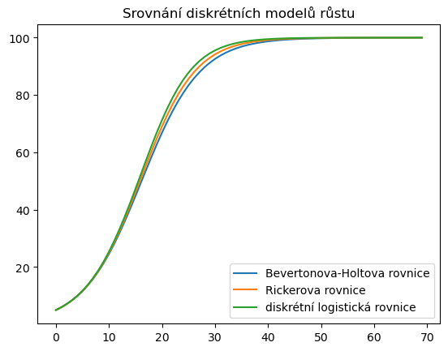
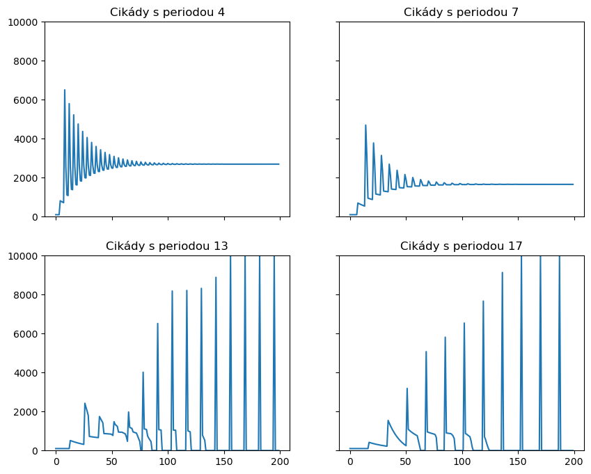

Diskrétní populační modely
Contents
11. Diskrétní populační modely#
Diskrétní populační modely jsou zpravidla rekurentní vzorce, které určují velikost populace nebo populací v dalším roce na základě velikostí v předchozím roce (modely prvního řádu) nebo několika předchozích let (modely vyššího řádu). Je-li závislost lineární, můžeme tyto modely zapsat pomocí maticového násobení, jak jsme poznali již dříve například u Leslieho matice. To je výhodné, protože můžeme využít rozvinutý aparát lineární algebry.
Výhodou diskrétních maticových modelů oproti spojitým je jednodušší řešení. To spočívá v opakovaném používání modelu a v postupném výpočtu populačních stavů jenom použitím jednoduchých matematických operací. Nevýhodou je horší možnost nalezení analytického řešení a že se modely někdy mohou chovat nečekaně, viz například chaos v diskrétní logistické rovnici.
11.1. Diskrétní modely jednodruhové populace#
11.1.1. Základní diskrétní modely#
Diskrétní model jednodruhové populace modelovaný rovnicí prvního řádu má obecný tvar
Základní diskrétní model, diskrétní logistickou rovnici, jsme poznali dříve. Tento model je jednoduchý, ale má komplikované chování, které může vést k periodickým řešením s vysokou periodou a k chaosu.
Ukážeme si volbu tří funkcí, které mají společné chování v počátku a při dosažení nosné kapacity prostředí. Konkrétně, platí \(f(0)=r\) a \(f(K)=0\).
Logistický růst
\[x(k+1)=r x(k)\left(1-\frac{x(k)}{K}\frac{r-1}{r}\right)\]Bevertonova–Holtova rovnice, logistická rovnice Pielou:
\[x(k+1)=x(t)\frac{rK}{K+(r-1)x(k)}\]Rickerova logistická rovnice:
\[ x(k+1)=x(k)e^{\left(1-\frac {x(t)}K\right)\ln r} \]
import numpy as np # knihovna pro numerické výpočty
import matplotlib.pyplot as plt # knihovna pro grafiku
import pandas as pd # knihovna pro praci s tabulkami
N = 70
x_p = np.zeros(N)
x_p[0] = 5
x_r = x_p.copy()
x_l = x_p.copy()
r = 1.2
K = 100
for k in range(N-1):
x_p[k+1] = x_p[k]*(r*K)/(K+(r-1)*x_p[k])
x_r[k+1] = x_r[k]*np.exp((1-x_r[k]/K)*np.log(r))
x_l[k+1] = x_l[k]*r*(1-x_l[k]/(K*r/(r-1)))
fig, ax = plt.subplots()
ax.plot(x_p, label = "Bevertonova-Holtova rovnice")
ax.plot(x_r, label = "Rickerova rovnice")
ax.plot(x_l, label = "diskrétní logistická rovnice")
ax.legend()
ax.set(
title="Srovnání diskrétních modelů růstu");

11.1.2. Periodické cikády#
Následující model je zpracován podle [14] a vysvětluje zajímavý efekt vyskytující se v životě cikád Magicicada septendecim, M. cassini a M. septendecula.
Dospělé cikády během pár týdnů svého života nakladou vajíčka u stromů, kde se vylíhly. Z vajíček se vyklubou larvy, které se zavrtají pod zem ke kořenům. Životní cyklus cikád se liší od 3 do 4, 7, 13 nebo 17 let. Poslední dva typy cikád se vyznačují (na východním pobřeží severní Ameriky) masovým synchronizovaným výskytem.
Předpokládejme, že druh má životní cyklus \(k\) let, larvy dospějí a objeví se na povrchu \(k\) let po smrti rodičů. Nechť \(n_t\) je počet larev, které se v roce \(t\) zavrtají do země, najdou útočiště a potravu u kořenů stromů a za \(k\) let se z nich (pokud přežijí) vylíhnou dospělé cikády.
Předpokládejme, jenom zlomek \(\mu\) larev přežije do každého dalšího roku. V roce \(t\) se vylíhnou larvy, které se před \(k\) lety zavrtaly do země (jejich počet byl \(n_{t-k}\)) a v zemi přežily celkem \(k\) let (každý rok jich přežije jenom \(\mu\)-násobek a proto \(k\) let přežije \(\mu^kn_{t-k}\) larev). Tyto larvy se objeví v roce \(t\) jako dospělí, kteří uzavřou cyklus. Z tohoto počtu predátoři zlikvidují \(p_t\) cikád a pro další rozmnožování zůstane \([\mu^kn_{t-k}-p_t]_+\) jedinců, kde \([x]_+=\max(x,0)\). Jestliže se každé cikádě narodí průměrně \(f\) larev, přibude v tomto roce
Je-li \(D\) celková nosná kapacita prostředí, je volná kapacita dána vztahem
Působení predátorů (živí se dospělými cikádami) můžeme modelovat rovnicí
Pro lepší formulaci numerického modelu posuneme index \(t\) o jedničku.
def cikady(
a=.042, # parametry populace (Murray)
f=10,
D=10000,
nu=.95,
mu=.95,
k=4, # perioda cikad
N = 200, # delka simulace
n0 = 100 # pocatecni hodnoty
):
n = np.zeros(N)
p = np.zeros(N)
n[0:k] = n0
for t in range(k-1,N-1):
p[t+1] = nu*p[t] + a*mu**k*n[t-k]
c = max(
0,
D-sum([mu**(i)*n[t+1-i] for i in range(1,k)])
)
M = max(
0,
f*(mu**k*n[t+1-k]-p[t+1])
)
n[t+1] = min(M,c)
return n
fig, axs = plt.subplots(
2,
2,
figsize=(10,8),
sharex=True,
sharey=True
)
D = 10000
for k,ax in zip([4, 7, 13, 17], axs.flatten()):
ax.plot(cikady(k=k))
ax.set(
ylim=(0,D),
title="Cikády s periodou "+str(k))
